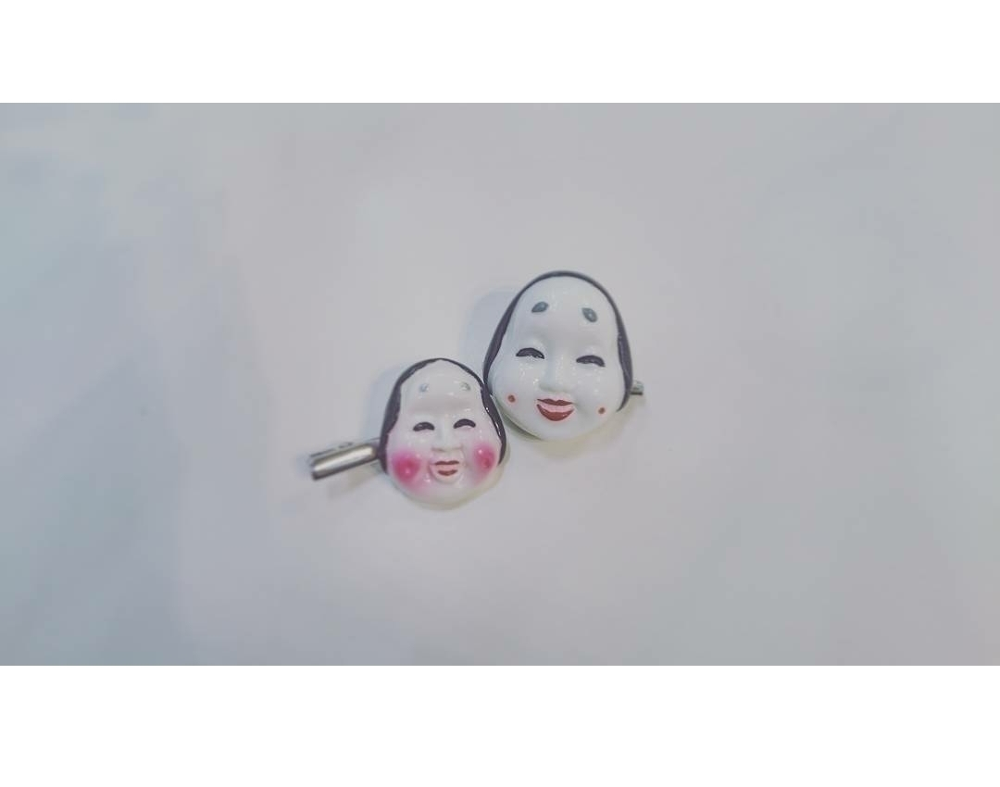
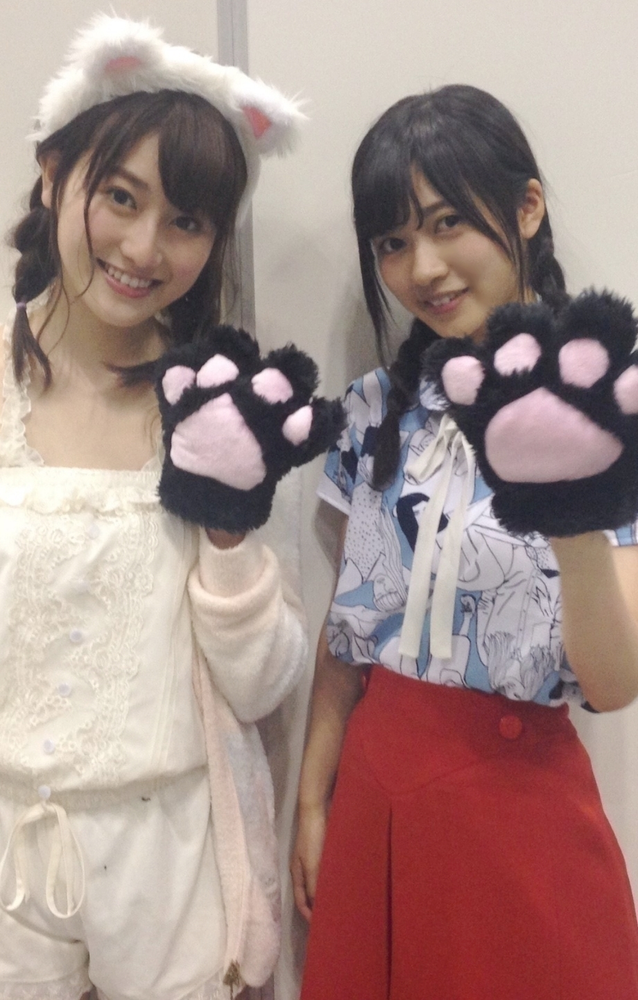
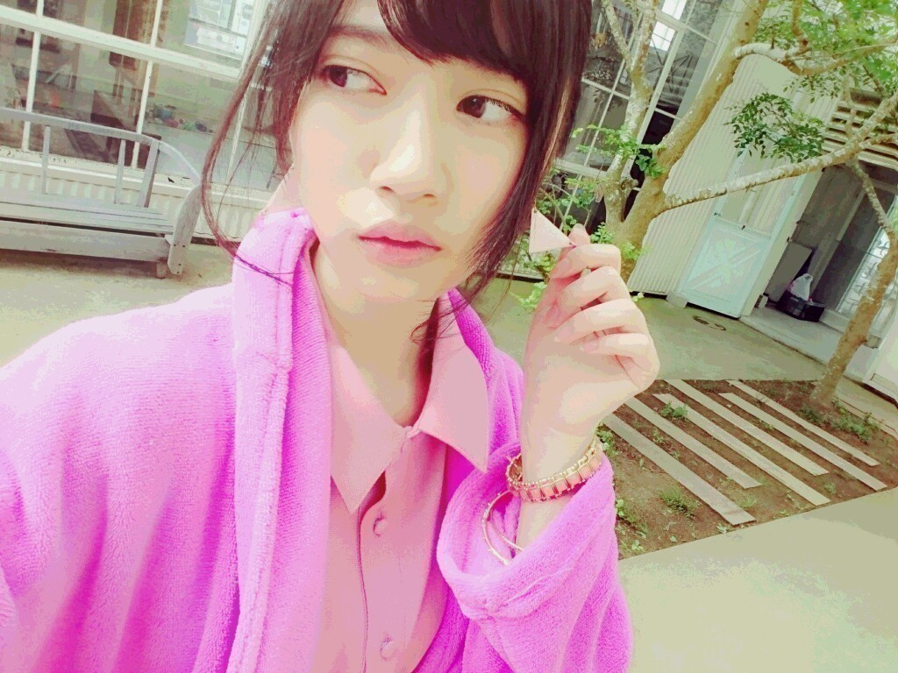
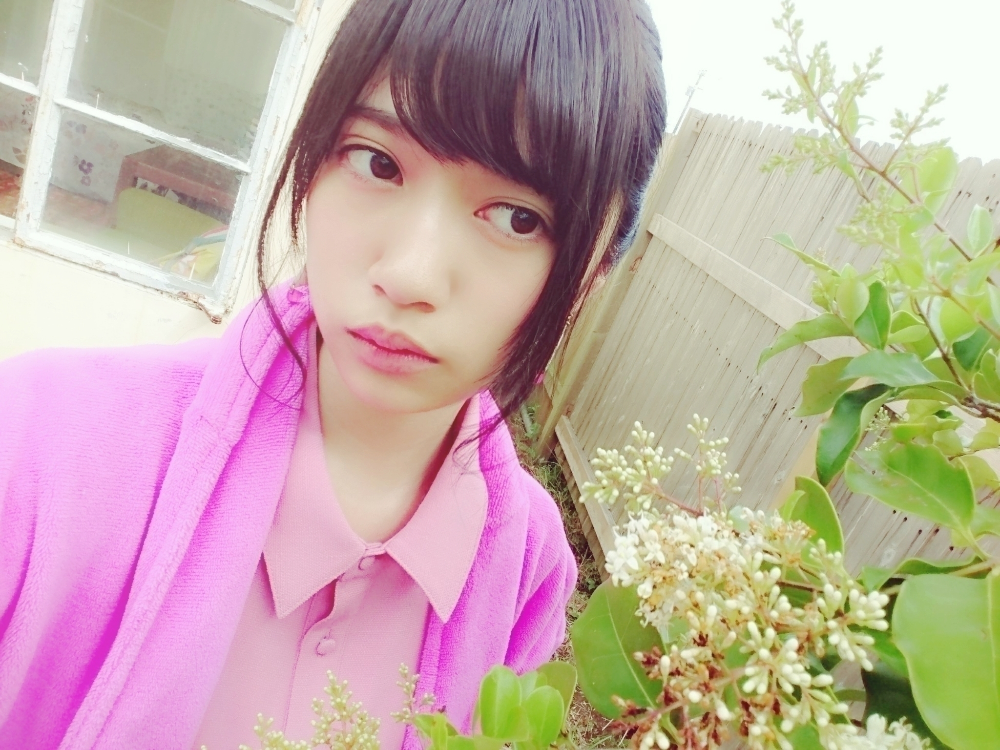

2016/0805Friひきだし
写真集発売日です
グアムは楽しかったな
日本とは違い心地いい暑さでした
また、機会があったら行きたいです
そして、本日
8月05日
13:10～15:55JFN系「FRIDAY GOES ON！～あっ、それいただきっ！～」
に出演します（´-`）
ひなちまさんとテラダです
急ではありますが
何卒、宜しくお願い致します
ちなみに
14:20頃～の予定です
そして、のぎ天2放送されます！
今日は色々盛り沢山ですね
そして、本日は取材もさせて頂きました
告知は後日、、、

一目惚れで購入したアクセサリー
遠すぎた

ずんっ
皆さんに幸福あれっと思い
この画像をアップしてみました！！！
良かったら、保存して下さい（´-`）
おはようございます
こんにちは
こんばんは
らんぜの勢い
止まらんぜーーーーー！
寺田蘭世です
録画していた
・ツキウタ。
・はんだくん
・この美術部には問題がある
を観ました
今季のアニメは
全てが凄く楽しいです♪
アニメを見ているときは
幸せな時間です
いつかのブログにも書いたのですが
いつもブログを更新するのに躊躇してしまう事があります。
本当にこれでいいのかなとか色々なことが心配になって溜め込んでしまうことが
多いのですが
コメントで
更新してくれてありがとう
更新してくれたから明日も頑張れる
私なんかが
誰かのモチベーションに
なれた事がものすごく嬉しいですこう言ったファンの皆さんからの声が聞けてから
自信にも繋がるし
何より安心します（´-`）
先日、ファンレターやプレゼントを頂戴しました
そのときもやっぱり
皆さんの事
もっと大切にしよう
一緒に楽しい思い出を作りたいと思えました
だから、もっと
肩の力抜いて楽しみつつ
やりたいと思えました！！
『おまけ』
貼る画像がなくて
フォルダーを整理しつつ
みていたら
守屋茜ちゃん

猫(=^・・^=)
写真取るときに
「良かったら着けて下さい！！！」って言われたので
着けて一緒にパシャリ
元気の良さそうな子でした（´-`）
いつも自分からいけないタイプの人なので嬉しかったよ（´-`）
猫
私もハロウィンで
何を着ようか
早いかもしれませんが
悩んでます
年に1回の行事
ハロウィンは割と好きなイベントの1つなので
気合がより入ります！
来て欲しいものが
あったら
教えて下さい参考にします
ちなみに、私はチャイナ服が第一候補かな、、、（´-`）
決まり次第
お知らせいたします(｀_´)ゞ


お花は良き香り。
2016/08/05 12:24
コメント(758)
ラジオおつかれらんぜー
ブログもっと更新してくださいよ！ブログは見てるだけで楽しいですし！
ブログもっと更新してくださいよ！ブログは見てるだけで楽しいですし！
かわいいよ蘭世たん
ブログありがとう！
はんだくん面白いよね！おれも好きなアニメだよー
ハロウィンのときはアニメのコスプレもいいかなと思う！蘭世が好きなアニメのやつ！
楽しみにしてるよ～
はんだくん面白いよね！おれも好きなアニメだよー
ハロウィンのときはアニメのコスプレもいいかなと思う！蘭世が好きなアニメのやつ！
楽しみにしてるよ～
明日からの名古屋公演頑張れ～☆彡
らんらん、握手会にまた、行くね〜〜❣️楽しみ〜❣️
らんらんの写真集が出たらすぐに買うのになぁ〜❣️
らんらんの写真集が出たらすぐに買うのになぁ〜❣️
チャイナ服見たい。。大歓迎だよ➰(о´∀`о)
あえて普通にパーカー姿とか見てみたいかも。
あ、もちろん萌え袖でお願いします！
これ大事。笑っ
あえて普通にパーカー姿とか見てみたいかも。
あ、もちろん萌え袖でお願いします！
これ大事。笑っ
珍しいけど、良い名前だね。蘭世、止まらんぜ。
相撲じゃないんだから、グランドに、女性的マネージャーが入って練習の手伝い、良いと思うけどね。
最近の、蘭世さんの活躍、止まらんぜ。
相撲じゃないんだから、グランドに、女性的マネージャーが入って練習の手伝い、良いと思うけどね。
最近の、蘭世さんの活躍、止まらんぜ。
おはようございます
こんにちは
こんばんは
更新ありがとう
らんぜの勢いとま
らんぜーーーーー！
写真集みたよ
こうやって少しずつ経験増やしてステップアップしてるのを見ると嬉しい
fgoもなんとか聞けた
また約束果たしてでれるの楽しみ
蘭世チャイナ服似合いそう
こんにちは
こんばんは
更新ありがとう
らんぜの勢いとま
らんぜーーーーー！
写真集みたよ
こうやって少しずつ経験増やしてステップアップしてるのを見ると嬉しい
fgoもなんとか聞けた
また約束果たしてでれるの楽しみ
蘭世チャイナ服似合いそう
寺田 蘭世 さ ー ン
写真集、今週には買わせて頂きます らんぜ、しっかり探すねー！！
らんぜ、しっかり探すねー！！
裸足でsummer、買ったけどらんぜの生写真でなかったー でも、typeD買ったから、シークレットグラフィティーいっぱい聞くね！あの曲ほんま好き
でも、typeD買ったから、シークレットグラフィティーいっぱい聞くね！あの曲ほんま好き
幸福あれっの画像保存したから、らんぜにも幸福あれっ！
らんぜの勢い止まらんぜ
写真集、今週には買わせて頂きます
裸足でsummer、買ったけどらんぜの生写真でなかったー
幸福あれっの画像保存したから、らんぜにも幸福あれっ！
らんぜの勢い止まらんぜ
ブログ更新ありがとうー
蘭世の勢い止まらんぜ
色々忙しいと思うけど、無理せずに
更新してもらえたら…
赤とかピンク系の色が似合うね
11月の名古屋握手会もどこかの部でコスプレ
してもらえたら嬉しいです
次は神宮行きます
蘭世の勢い止まらんぜ
色々忙しいと思うけど、無理せずに
更新してもらえたら…
赤とかピンク系の色が似合うね
11月の名古屋握手会もどこかの部でコスプレ
してもらえたら嬉しいです
次は神宮行きます
お疲れ様！
写真集みたよ！
さいこー！
さいこー！
写真集よかったよ！
蘭世ちゃーん！！かわいい！！！さすが蘭世ちゃんやな！ふっふっふ
蘭世✋(◉ ω ◉｀)よお
写真集買ったよー！
らんぜ安定の可愛さ^^*
名古屋のLIVE頑張ってね！
大阪から愛をこめて
らんぜ安定の可愛さ^^*
名古屋のLIVE頑張ってね！
大阪から愛をこめて
お仕事お疲れ様です！
もうすぐで名古屋だね！
体調に気をつけてlive頑張ってね！
京都のシロクマあつき
もうすぐで名古屋だね！
体調に気をつけてlive頑張ってね！
京都のシロクマあつき
蘭世ついに明日名古屋のライブだね！
めっちゃ楽しみです。
めっちゃ楽しみです。
らんぜ！
「寺」のうちわをぶら下げて
握手会に参加してる者です！
ハロウィンは「寺田ニャンぜ」一択。笑
アンダラ広島岡山当選したよ！
必ず行くからね！
和⊿
「寺」のうちわをぶら下げて
握手会に参加してる者です！
ハロウィンは「寺田ニャンぜ」一択。笑
アンダラ広島岡山当選したよ！
必ず行くからね！
和⊿
蘭世ー！猫の写メかわいい！！アクセサリー、お面かな？ライブもとうとう始まり、乃木坂にとっての夏が始まったって感じだね、神宮たのしみにしてます！らんぜのいきおいがとまらんぜ！
ブログ更新ありがとう！！
ラジオ聞きましたよ！！！！
センターになってまた聴ける日を楽しみに、そして、応援してます！(^^)
明日はLiveですね！！！
行けないけどぜひ楽しんで！
10/23の蘭世の生誕祭の時にもハロウィンして欲しいな
なんて思ってます笑
チャイナ服いいね！
でもメイドさんとかも期待してます笑
一生蘭世推しのゆうたより
ラジオ聞きましたよ！！！！
センターになってまた聴ける日を楽しみに、そして、応援してます！(^^)
明日はLiveですね！！！
行けないけどぜひ楽しんで！
10/23の蘭世の生誕祭の時にもハロウィンして欲しいな
なんて思ってます笑
チャイナ服いいね！
でもメイドさんとかも期待してます笑
一生蘭世推しのゆうたより
明日から名古屋でライブだねー(^ ^)
明日は見に行くので楽しみです！
写真集見たよー(^ ^)
みんな可愛いわε-(´∀｀; )
もちろん蘭世が1番だけどね(^ ^)
明日は見に行くので楽しみです！
写真集見たよー(^ ^)
みんな可愛いわε-(´∀｀; )
もちろん蘭世が1番だけどね(^ ^)
ブログ更新お疲れサマンサ
あとラジオもお疲れ！！
蘭世がなにげに欅坂のメンバーと交流してるんだね笑
あと安定して写メ可愛いw
あとラジオもお疲れ！！
蘭世がなにげに欅坂のメンバーと交流してるんだね笑
あと安定して写メ可愛いw
蘭世ー！
やっともー少しで神宮のバスラいけるよ
すごく楽しみ！
ハロウィンには全く関係ないけどジェラピケきてほしいな笑
きてくれたら嬉しい。
じゃ最近かなり暑いから熱中症とかならいように。
蘭世の勢いがとまらんぜ！
やっともー少しで神宮のバスラいけるよ
すごく楽しみ！
ハロウィンには全く関係ないけどジェラピケきてほしいな笑
きてくれたら嬉しい。
じゃ最近かなり暑いから熱中症とかならいように。
蘭世の勢いがとまらんぜ！
ブログ更新ありがと＼(^o^)／
写真集まだ届かないから見れないけど
すごく楽しみ！！のぎ天のキャンプも！！！
これから色々イベントあるね！
すごく楽しみです♪
夏バテに気をつけてね(>_<)
蘭世の勢いとまらんぜー！
んじゃ！
写真集まだ届かないから見れないけど
すごく楽しみ！！のぎ天のキャンプも！！！
これから色々イベントあるね！
すごく楽しみです♪
夏バテに気をつけてね(>_<)
蘭世の勢いとまらんぜー！
んじゃ！
蘭世のピンク一式可愛すぎ 蘭世本当にモバメも多くて ブログ更新も頻繁にしてくれてめっちゃ嬉しい！
うい！
ラジオもう終わっちゃったね^^;
画像は保存しないよ笑
幕張なんかする感じか、、、
さすがにどっかの会場行かないとね(>_<)
あと残ってるの名古屋くらいだろうけど
長濱ねるちゃんか石森虹花ちゃんと写真撮ってきて！笑
ラジオもう終わっちゃったね^^;
画像は保存しないよ笑
幕張なんかする感じか、、、
さすがにどっかの会場行かないとね(>_<)
あと残ってるの名古屋くらいだろうけど
長濱ねるちゃんか石森虹花ちゃんと写真撮ってきて！笑
蘭世～！
写真集いいねー！
ライブ楽しみだなぁ！可愛い蘭世見れるの楽しみにしてまーす！
写真集いいねー！
ライブ楽しみだなぁ！可愛い蘭世見れるの楽しみにしてまーす！
蘭世ブログ更新ありがとう(^^)(^^)
ブログ更新くるとすごく嬉しいよ！
今日から、自分も夏休み(^^)
ライブも握手会もあるし、すごく楽しみ！！
蘭世がんばれ！
ブログ更新くるとすごく嬉しいよ！
今日から、自分も夏休み(^^)
ライブも握手会もあるし、すごく楽しみ！！
蘭世がんばれ！
俺はニャンぜに会いたいぞ！！！！！
握手会いくぜー！！
たのしみだぜー！！
たのしみだぜー！！
蘭世＼(^o^)／お疲れ様でした
これからも頑張って(/･ω･)/
蘭世可愛い＼(^o^)／❤
写真集楽しみに＼(^o^)／ｗｗ
これからも頑張って(/･ω･)/
蘭世可愛い＼(^o^)／❤
写真集楽しみに＼(^o^)／ｗｗ
お疲れ様です！ハロウィンにチャイナ服って結構変化球ですね笑
こんにちは。
アニメを見ている時間以外は幸せではないのかい？
大丈夫。
躊躇しないでドンときてよ。
ちゃんと受け止めるからドンドン更新しちゃって。
躊躇してたら"とまらんぜ"にならないでしょ。
アニメを見ている時間以外は幸せではないのかい？
大丈夫。
躊躇しないでドンときてよ。
ちゃんと受け止めるからドンドン更新しちゃって。
躊躇してたら"とまらんぜ"にならないでしょ。
らんぜのいきおいとまらんぜ‼︎
更新ありがとう。
待ち望んでいた写真集発売日！
届くのが楽しみ！
それから，なんとも言えないアクセサリだね！
幸福が訪れるのを期待してます！
らんぜの勢いとまらんぜ～～～～
待ち望んでいた写真集発売日！
届くのが楽しみ！
それから，なんとも言えないアクセサリだね！
幸福が訪れるのを期待してます！
らんぜの勢いとまらんぜ～～～～
らんぜー！
らんぜのブログとかニュースがとまらんぜ読むの楽しみにしてますよ
チャイナ服いいですね
希望としてはナース服が見たいです
コスプレしてくれるだけでもありがたいので、どんなコスプレでも嬉しいです
楽しみにしてます
らんぜのブログとかニュースがとまらんぜ読むの楽しみにしてますよ
チャイナ服いいですね
希望としてはナース服が見たいです
コスプレしてくれるだけでもありがたいので、どんなコスプレでも嬉しいです
楽しみにしてます
お疲れ様！
更新ありがとう！
グアム絶対楽しいよね。羨ましい…。
幸福あれっですか。
待ち受けにでもさせていただきます笑
猫かわいい…
チャイナはめちゃめちゃ良いと思う！
個人的に好きなのは、
ハロウィンでよく見るナースの格好かな〜
グアム絶対楽しいよね。羨ましい…。
幸福あれっですか。
待ち受けにでもさせていただきます笑
猫かわいい…
チャイナはめちゃめちゃ良いと思う！
個人的に好きなのは、
ハロウィンでよく見るナースの格好かな〜
こんにちは！
いつもブログ楽しく読ませてもらっています！
そしてお仕事ご苦労様です！
いろいろな雑誌などで蘭世を見かけるとても楽しい気持ちになります！これからも楽しみにしています！
ハロウィンの服はチャイナ服見てみたいてます！笑
最近は楽しみなことが多くて、笑顔が絶えません！今年は乃木坂に握手会に行くようになって初めての夏になります！どうやら最高の夏になりそうです！
バスラやアンダラも行きます！もちろん蘭世の誕生日のライブも行きます！とても楽しみです！
これからも暑い日が続くと思いますか、体調には気をつけて欲しいです！疲れたときはゼリーを食べると元気になると誰かが言っていました！もし良かったら試してみてください！
これからも応援します！
らんぜの勢いとまらんぜーーーーーー！
では！えいえいおー！
いつもブログ楽しく読ませてもらっています！
そしてお仕事ご苦労様です！
いろいろな雑誌などで蘭世を見かけるとても楽しい気持ちになります！これからも楽しみにしています！
ハロウィンの服はチャイナ服見てみたいてます！笑
最近は楽しみなことが多くて、笑顔が絶えません！今年は乃木坂に握手会に行くようになって初めての夏になります！どうやら最高の夏になりそうです！
バスラやアンダラも行きます！もちろん蘭世の誕生日のライブも行きます！とても楽しみです！
これからも暑い日が続くと思いますか、体調には気をつけて欲しいです！疲れたときはゼリーを食べると元気になると誰かが言っていました！もし良かったら試してみてください！
これからも応援します！
らんぜの勢いとまらんぜーーーーーー！
では！えいえいおー！
ブログ更新ありがとう！待ってたよ〜
グアム行ったことないから行ってみたいなー
全握まで1ヶ月きったね！もうすぐ会えると思うと勉強とか色々頑張れます
グアム行ったことないから行ってみたいなー
全握まで1ヶ月きったね！もうすぐ会えると思うと勉強とか色々頑張れます
蘭世〜かわいすぎる！
更新ありがとう！
アクセサリーかわいすぎる！！！！
今日も蘭世への愛が止まらんぜだよ〜♡
蘭世お疲れ様(´▽`)ノ
ブログ更新ありがとうね(*´ω`*)
蘭世の言葉、文章好きだよ(*´ω`*)
8月に入ってまた暑くなってきたけど
暑さに負けず頑張ろうねo(｀ω´*)o
ブログ更新ありがとうね(*´ω`*)
蘭世の言葉、文章好きだよ(*´ω`*)
8月に入ってまた暑くなってきたけど
暑さに負けず頑張ろうねo(｀ω´*)o
ブログ更新ありがとー！
チャイナ服、良き!!!
楽しみにしてる〜
チャイナ服、良き!!!
楽しみにしてる〜
3日ぶりのコメントです！
お久しぶりです！
こんにちは！
コスプレチャイナ服の蘭世見たいです！
明日は全国ツアーですね！
楽しんでくださいね！
お久しぶりです！
こんにちは！
コスプレチャイナ服の蘭世見たいです！
明日は全国ツアーですね！
楽しんでくださいね！
とまらんぜー
チャイナいいね！似合いそう( ﾟ∀ﾟ)ﾉ
チャイナいいね！似合いそう( ﾟ∀ﾟ)ﾉ
蘭世ちゃん、こんにちは。
さっきのラジオ聴いたよ。
センターになってまた番組に出るのを楽しみに待ってるぜ。
ヤングガンガン買ってきた。
テラダステッカー嬉しい。
のぎ天２のキャンプ今から見ます。
では。
さっきのラジオ聴いたよ。
センターになってまた番組に出るのを楽しみに待ってるぜ。
ヤングガンガン買ってきた。
テラダステッカー嬉しい。
のぎ天２のキャンプ今から見ます。
では。
岡山の公演にチケット当たったらいきます！
楽しみにしてます！
楽しみにしてます！
セブ島から帰ったぜー！ 日本のご飯が美味しい！笑
オーキャンの連続で今慶應がけっこういいなーって思ってるー笑 蘭世は大学でなんかやりたいこととかあるの？ ちなみにおれは言語系です笑 ハロウィンもブログの更新も待ってるぜー！
俺の勢いもとまらんぜー！
オーキャンの連続で今慶應がけっこういいなーって思ってるー笑 蘭世は大学でなんかやりたいこととかあるの？ ちなみにおれは言語系です笑 ハロウィンもブログの更新も待ってるぜー！
俺の勢いもとまらんぜー！


写真集、買ったけど
まだ見てないや笑。
おうちでゆっくりするときに、見ます笑
たーーのしっみーー。
名古屋！！！あしたから、
がんぱれー！たのしんでねっっ！
名古屋でお待ちしておりますっ